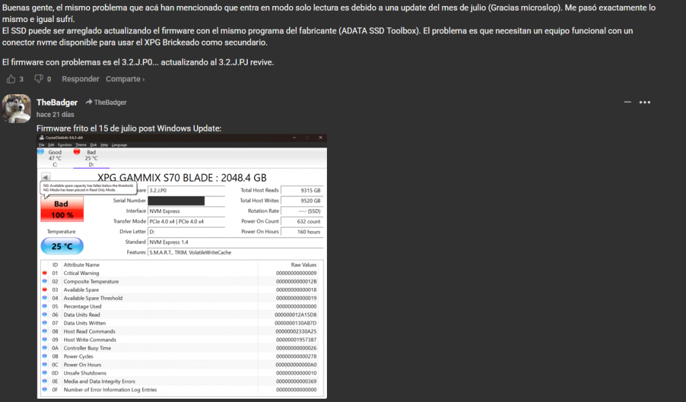

fixing an XPG Gammix S70 Blade when the vendor tool can't see it
A friend's XPG Gammix S70 Blade (1 TB, InnoGrit IG5236 controller) stopped working properly. Windows still showed it, but ADATA's own SSD ToolBox didn't list it at all, so there was no way to update the firmware the normal way. We fixed it in one very long night over a Discord call, with Qwen helping us think. This is what we did, in case someone else has the same drive and the same problem.
Flashing firmware can brick a drive for good. This is what worked for us, on this model, and the drive's data was already gone. Don't copy it blindly, and don't flash anything you haven't checked is the right image.
art by Kedr (@Kedr_bit)
What was wrong
- Disk Management showed the drive, with a tiny "1 MB unassigned" at the end (that part is normal, it's just alignment).
- ADATA SSD ToolBox showed an empty drive list.
- The official updater (
FWUpdate_3.2.J.PJ.exe) didn't list the drive either. - The drive was on firmware 3.2.J.JE, and the fix was 3.2.J.PJ.
- Under Linux, the drive only appeared after booting with
nvme_core.multipath=0.
What started all this was a forum post (in Spanish) that my friend found. It says drives on firmware 3.2.J.P0 go read-only after the July Windows Update, and that flashing 3.2.J.PJ with the ADATA ToolBox revives them, as long as you plug the dead drive into a working PC as a secondary drive. Another user in the thread posted a CrystalDiskInfo screenshot of the same thing, with the "Media has been placed in Read Only Mode" warning.

Source: the thread on Solotodo
Ours was a bit different: it was on JE instead of P0, nvme smart-log showed critical_warning : 0, and the ToolBox never listed it, so the forum's fix didn't work as written. Thanks microslop.
Step 1: ask ADATA's server for the firmware
The ToolBox never bundles the firmware, it downloads it. So I took the installer apart on my own PC (Linux) to see where it asks:
unzip ADATA_SSDToolBoxSetup_v6.2.3.zip
innoextract ADATA_SSDToolBoxSetup_v6.2.3.exe
cd app
cat SSDToolBox.exe.configThe config file lists the update API:
<add key="ApiFwVersion" value="https://webapi2.adata.com/ssd_api/ssdFwUpdate" />To learn what it sends, I decompiled the ToolBox with ILSpy (it's a .NET program):
sudo pacman -S dotnet-sdk
dotnet tool install --global ilspycmd
ilspycmd SSDToolBox.exe -p -o decompiled_exeThe decompiled CheckFwUpdate just does a GET with the drive's serial number and current firmware, and the answer is split on !:
curl -k -s "https://webapi2.adata.com/ssd_api/ssdFwUpdate?SSD_Serial_Number=<DRIVE_SERIAL>&SSD_Inside_Firmware=3.2.J.JE"
Y!Y002!https://webapi3.adata.com/storage/SSD/SSDFWupdate/INNOGRIT/IG5236CAA_HY/FWUpdater_32JPJ.zip!MES_OK<DRIVE_SERIAL> is a placeholder. I'm not publishing my friend's real serial and you shouldn't publish yours either. But you do need to put your own drive's serial in the request (SN column of sudo nvme list, or sudo nvme id-ctrl /dev/nvme0 | grep ^sn), and your own current firmware in SSD_Inside_Firmware (whatever nvme list shows as FW Rev: JE in our case, P0 in the forum's). The server compares the firmware to decide if an update exists, and it probably uses the serial to choose which NAND variant's firmware to serve: the _HY in the URL and Hynix3DV7 in the zip name mean this drive got the Hynix build. We never tested it with a different serial, so that part is a guess from the naming. But if it's true, asking with someone else's serial could give you an image meant for different NAND, and flashing that can brick the drive for real. Same reason to never flash a .fw a stranger posted: query with your own serial, then verify the file like we did (size + strings).
That third field is the download link for the PJ updater. (I needed -k because my machine didn't trust their certificate chain. That turns off TLS verification, so only do it for something like this, and check what you download.)
Step 2: the firmware is hidden inside the updater
The zip only contains FWUpdate_3.2.J.PJ.exe and a PowerPoint. No .bin anywhere. But 7-Zip can open the .exe like an archive:
7z x FWUpdate_3.2.J.PJ.exe -oFWExtracted
cd FWExtracted/.rsrc/SCRIPTZIP
file 1000 # Zip archive data, method=deflate
cp 1000 payload.zipThat 1000 resource is a zip with 8 files, including the firmware (a .fw of 933,888 bytes). But every tool refused to open it: unzip said "bad zipfile offset", 7z said "not an archive", and zip -FF found the file list but "no local entry" for anything.
Step 3: rebuilding the broken zip
The central directory was fine, but the entries' real data didn't start exactly where it said. So we wrote a small Python script that reads the file list, then for each file tries to inflate starting a few bytes later each time until the output matches the expected size. The offsets turned out to be between 57 and 209 bytes off. Our first version didn't skip anything and produced garbage, the second one worked on all 8 files:
import zlib, struct, os
data = open('payload.zip','rb').read()
eocd = data.rfind(b'PK\x05\x06')
count = struct.unpack('<H', data[eocd+10:eocd+12])[0]
off = struct.unpack('<I', data[eocd+16:eocd+20])[0]
os.makedirs('out2', exist_ok=True)
for i in range(count):
assert data[off:off+4] == b'PK\x01\x02'
method, = struct.unpack('<H', data[off+10:off+12])
csize, = struct.unpack('<I', data[off+20:off+24])
usize, = struct.unpack('<I', data[off+24:off+28])
nlen, = struct.unpack('<H', data[off+28:off+30])
elen, = struct.unpack('<H', data[off+30:off+32])
clen, = struct.unpack('<H', data[off+32:off+34])
loff, = struct.unpack('<I', data[off+42:off+46])
name = data[off+46:off+46+nlen].decode('utf8','replace')
out = None; skip_found = -1
if method == 8:
for skip in range(0, 512):
try:
d = zlib.decompressobj(-15)
cand = d.decompress(data[loff+skip:loff+skip+csize+64])
if len(cand) == usize:
out = cand; skip_found = skip; break
except Exception:
pass
else:
out = data[loff:loff+csize]; skip_found = 0
if out is None:
print('FAILED', name)
else:
safe = name.replace('/','_').replace('+','_')
open(f'out2/{safe}','wb').write(out)
print(f'OK skip={skip_found} {name} -> {len(out)}')
off += 46 + nlen + elen + clenTo check we had the right file, strings on the .fw showed 3.2.J.PJ@rainier, and its size matched what the zip said it should be. We renamed it to pj.fw (the name doesn't matter) and compared SHA-256 on both PCs before using it.
I'm not hosting the firmware here since it's ADATA's file, but with the steps above you can get it yourself.
Step 4: flashing it from a Linux live USB
On my friend's PC we booted a CachyOS live ISO from a Ventoy stick. On the ISO's own GRUB menu (not Ventoy's), press e, add nvme_core.multipath=0 at the end of the linux line, and boot with Ctrl+X. Then:
sudo nvme list # check which device is the XPG!
sudo nvme fw-log /dev/nvme0
sudo nvme fw-download /dev/nvme0 -f pj.fw
sudo nvme fw-commit /dev/nvme0 --slot=1 --action=1Why that parameter: the drive's identify data reports mnan : 0 (maximum number of allowed namespaces), which is an invalid value. Our best guess is that kernels with NVMe multipath enabled reject it and drop the drive at probe, so it never appears at all. We didn't capture the exact dmesg error to confirm it, but the parameter is what made the drive show up. nvme_core.multipath=0 turns that subsystem off. That would also explain why Disk Management always saw the drive while Linux saw nothing.
It said "Firmware download success" and "Success committing firmware", on the first try. Then a full power off (not a restart), and after booting again nvme list finally said 3.2.J.PJ. My message at that moment was "IT SAYS PJ WE DID IT!!!!"
Step 5: the drive still looked dead (for a bit)
Right after the flash, mounting the old NTFS partition failed, ntfsfix failed and reads gave I/O errors. The same thing had happened earlier in the night: after any failed write, the drive stayed unresponsive until a full cold boot. So after another power-off we just formatted it. It was only a games drive, so nothing important was lost:
sudo mkfs.ntfs -Q -f -L Juegos /dev/nvme0n1p2 # double check the device name first!
sudo mkdir -p /mnt/xpg
sudo mount -t ntfs3 /dev/nvme0n1p2 /mnt/xpg(That mkdir was needed because the live session had forgotten the mount folder, which looked like another failure but wasn't.) Then he booted Windows, created a folder, and it worked. He started reinstalling his games.
What I learned
- Vendor tools usually just talk to a web API. If you can read the config and decompile the program, you can ask it yourself.
- Corrupted zip files are sometimes fixable: the central directory was fine, only the offsets were wrong.
- Qwen was great for ideas but confidently wrong a few times. Check its claims with real output. BUT, overall a great helper.
- Doing this at 4 AM over Discord with a friend is weirdly fun.
If you have the same drive and get stuck, tell me what you see and I'll try to help.
← back to all posts